xopto.pf.pfbase module¶
- class PfBase[source]¶
Bases:
objectThe base class of all scattering phase functions.
- cdf(costheta: numpy.ndarray, meth: str = 'simpson', npts: int = 10000, **kwargs) → numpy.ndarray[source]¶
Cumulative probability density function calculated at the specified deflection angle cosines.
- Parameters
costheta (np.ndarray) – A vector of scattering angle cosines at which the cumulative distribution function is to be computed.
meth (str) –
- Numerical integration method:
’trapez’
’simpson’ - default
’quad’ - adaptive step; accurate but slower
npts (int) – Number of control points used by the trapez and simpson numerical integration methods.
kwargs (dict) – Optional keyword arguments passed to the scipy.integrate.quad function.
- Returns
pfcum – Returns the cumulative probability density values at the given scattering angle cosines.
- Return type
np.ndarray
Note
Computation method ‘quad’ might be slower on some platforms, however produces accurate results. Use ‘quad’ whenever possible. Otherwise check the accuracy of results obtained by ‘simpson’ or ‘trapez’ and adjust parameter npts if required (increase to improve accuracy, decrease for faster computation and increased computational error).
Examples
>>> from matplotlib import pyplot as pp >>> import numpy as np >>> >>> costheta = np.linspace(-1.0, 1.0, 1000) >>> # define a phase function >>> miepf = Mie(1.6, 1.33, 4.5e-6, 550e-9) >>> # accurate but sometimes slow adaptive step-size integration by quad >>> cdpf = miepf.cdf(costheta, 'quad') >>> # fast computation using simpson integration with 10000 control points >>> cpffast = miepf.cdf(costheta, 'simpson', 10000) >>> >>> pp.semilogy(costheta, cdpf) >>> pp.semilogy(costheta, cpffast)
- fastg(n: int, npts: int = 1000, pf: Optional[numpy.ndarray] = None, costheta: Optional[numpy.ndarray] = None) → float[source]¶
Computes the n-th Legendre moment of the scattering phase function. A fast fixed-step simpson quadrature is used to compute the Legendre moment. Note that the default number of points “npts” at which the value of scattering phase function is computed might be insufficient for accurate estimation of higher order Legendre moments.
- Parameters
n (int) – The Legendre moment to calculate. (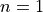 yields the anisotropy factor 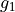)
npts (int) – Number of points (scattering angle cosines) at which the scattering phase function is estimated. The value is ignored if the value of costheta parameter is not None.
pf (np.ndarray) – A vector containing the values of the scattering phase function at equally spaced scattering angle cosines from [-1, 1]. If None, the values are calculated at scattering angle cosines defined by argument costheta.
costheta (np.ndarray) –
A vector of equally spaced numbers (scattering angle cosines) on the interval [-1, 1] at which the scattering phase function is defined. If None, the values are calculated as:
np.linspace(-1.0, 1.0, npts)if pf is Nonenp.linspace(-1.0, 1.0, pf.size)if pf is not None
- Returns
p – Value of the n-th Legendre moment.
- Return type
float
- fastgs(last: int, npts: int = 1000, pf: Optional[numpy.ndarray] = None, costheta: Optional[numpy.ndarray] = None) → numpy.ndarray[source]¶
Computes the first n Legendre moments of the scattering phase function. A fast fixed-step simpson quadrature is used to compute the Legendre moments. Note that the default number of points “npts” at which the value of scattering phase function is computed might be insufficient for accurate estimation of higher order Legendre moments.
- Parameters
last (int) – The last Legendre moment to be calculate.
npts (int) – Number of points (scattering angle cosines) at which the scattering phase function is estimated. The value is ignored if the value of costheta parameter is not None.
pf (np.ndarray) – A vector containing the values of the scattering phase function at equally spaced scattering angle cosines from [-1, 1]. If None, the values are calculated at scattering angle cosines defined by argument costheta.
costheta (np.ndarray) –
A vector of equally spaced numbers (scattering angle cosines) on the interval [-1, 1] at which the scattering phase function is defined. If None, the values are calculated as:
np.linspace(-1.0, 1.0, npts)if pf is Nonenp.linspace(-1.0, 1.0, pf.size)if pf is not None
- Returns
p – Values of Legendre moments from 0 to ‘last’ as a vector ([g_0, g_1, …, g_last]).
- Return type
np.ndarray
- g(n: int, **kwargs) → float[source]¶
Computes the n-th Legendre moment of the scattering phase function.
- Parameters
n (int) – The Legendre moment to calculate. (n=1 is g_1 - anisotropy factor)
kwargs (dict) – Optional keyword arguments passed to scipy.integrate.quad function.
- Returns
p – Value of the n-th Legendre moment.
- Return type
float
- gs(last: int, **kwargs) → numpy.ndarray[source]¶
Computes the first n Legendre moments of the scattering phase function.
- Parameters
last (int) – The last Legendre moment to be calculate.
kwargs (dict) – Optional keyword arguments passed to scipy.integrate.quad function.
- Returns
p – Legendre moments of the scatteing phase function from 0 to ‘last’ as a vector a numpy vector ([g_0, g_1, …, g_last]).
- Return type
np.ndarray
- mclut(n: int = 1000, ncd: int = 10000, **kwargs) → Tuple[Tuple[float, float, float], numpy.ndarray][source]¶
Prepares a nonlinear Monte Carlo lookup table for sampling the scattering angles of the scattering phase function.
- Parameters
n (int) – The LUT size.
ncd (int) – The number of equally spaced points (scattering angles) at which the cumulative probability density of the scattering phase function is calculated.
kwargs (dict) – Parameters passed to the
PfBase.cdf()method of the scattering phase function.
- Returns
params (Tuple[float, float, float]) – List or tuple of three parameters [a, b, c] that can be used to estimate the scattering angle cosine from a unifor random number F from [0, 1]:
index = 0.5*(params[0]/(F - params[2]) - params[1] + 1.0)*(lut.size - 1) first = np.clip(int(np.floor(index)), 0, lut.size - 1) second = np.clip(first + 1, 0, lut.size - 1) dx = index - first costheta = lut[first]*(1.0 - dx) + lut[second]*dx
lut (np.ndarray) – LUT data as a vector of n elements.
Note
The returned values can be used to create a Monte Carlo lookup table by calling constructor
mcbase.pf.Lut(*pf.mclut()).Examples
Prepares a Monte Carlo lookup table-based scattering phase function of a water dispersion containing 1 um microspherical particles with a refractive index 1.6 (medium/water refractive index is 1.33) at 550 nm.
>>> import numpy as np >>> from matplotlib import pyplot as pp >>> from xopto.mcbase import mcpf >>> from xopto import pf >>> >>> mie_pf = pf.Mie(1.6, 1.33, 1e-6, 550e-9) >>> mcpf = mcpf.Lut(*mie_pf.mclut()) >>>
- mcluterr(params: Tuple[float, float, float], lut: numpy.ndarray, npts: int = 1000) → numpy.ndarray[source]¶
Evaluate the performance of the lookup table created by the
PfBase.mclut()method.The parameters of this function are as returned by the
PfBase.mclut()method)- Parameters
lut (np.ndarray) – Lookup table data as a numpy vector of length n.
params (Tuple[float, float, float]) –
A tuple of three parameters [a, b, c] that can be used to estimate the scattering angle cosine from a unifor random number F from [0, 1]:
npts (int) – Number of equally spaced points from [0.0, 1.0] at which the scattering phase function is evaluated.
- Returns
costheta (np.ndarray) – The estimated scattering angle cosines.
flut (np.ndarray) – Cumulative probability density of the scattering phase function at the given scattering angle cosines computed from the lookup table.
ftrue (np.ndarray vector) – True values of the cumulative probability density of the scattering phase function at the given scattering angle cosines.
Examples
>>> import numpy as np >>> from matplotlib import pyplot as pp >>> >>> pf = Mie(1.6, 1.33, 5e-6, 550e-9) >>> costheta, flut, ftrue = pf.mcluterr(*pf.mclut(512)) >>> >>> pp.figure() >>> pp.subplot(121) >>> pp.semilogy(costheta[1:], flut[1:], label='CDF Estimated by LUT') >>> pp.semilogy(costheta[1:], ftrue[1:], label='True CDF') >>> pp.grid() >>> pp.legend() >>> >>> pp.subplot(122) >>> pp.plot(costheta[1:], (flut[1:] - ftrue[1:])/ftrue[1:]) >>> pp.grid() >>> pp.title('Relative CDF error')
- fastg(n: int, pf: numpy.ndarray, costheta: Optional[numpy.ndarray] = None) → float[source]¶
Computes the n-th Legendre moment of the scattering phase function defined on equally spaced grid of deflection angle cosines. Note that if the scattering phase function is defined only at a few points, the computed Legendre moments might be inaccurate.
- Parameters
n (int) – The Legendre moment to calculate. ( yields the anisotropy factor ).
pf (np.ndarray) – A vector containing the values of the scattering phase function at equally spaced deflection angle cosines from [-1, 1].
costheta (np.ndarray) – A vector of equally spaced numbers (deflection angle cosines) on the interval [-1, 1] at which the phase function is estimated. If None, costheta is calculated as np.linspace(-1.0, 1.0, pf.size)
- Returns
p – Value of the n-th Legendre moment.
- Return type
float
- fastgs(last: int, pf: numpy.ndarray, costheta: Optional[numpy.ndarray] = None, out: Optional[numpy.ndarray] = None)[source]¶
Computes the first n Legendre moments of the scattering phase function defined on equally spaced grid of deflection angle cosines. Note that if the scattering phase function is defined only at a few points, the computed Legendre moments might be inaccurate.
- Parameters
last (int) – The last Legendre moment to be calculate.
pf (np.ndarray) – A vector containing the values of the scattering phase function at equally spaced deflection angle cosines from [-1, 1].
cotheta (np.ndarray) – A vector of equally spaced numbers (deflection angle cosines) on the interval [-1, 1] at which the phase function is estimated. If None, costheta is calculated as
np.linspace(-1.0, 1.0, pf.size).out (np.ndarray) – A vector of size last + 1 for storing the Legendre moments.
- Returns
p – Values of Legendre moments from 0 to ‘last’ as a vector 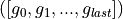.
- Return type
np.ndarray
- ilut_function(randnum: float, params: list) → float[source]¶
Inverse of the parametric approximation of the cumulative probability density function Fap (python implementation lut_function):
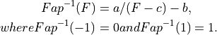
- Parameters
costheta (float or np.ndarray) – A vector of values (cumulative distribution) from [0.0, 1.0] for which the deflection angle cosine is computed.
params (list or tuple) – Approximation function parameter list. This implementation requires only one parameter c. Parameters a and b are calculated according to the above equations.
- Returns
approx – Deflection angle cosines approximations computed at the given values.
- Return type
float or np.ndarray
Examples
Inverse of the approximation function for several different values of parameter a.
>>> from matplotlib import pyplot as pp >>> import numpy as np
>>> F = np.linspace(0.0, 1.0, 1000) >>> C = [-0.01, -0.1, - 1, -10] >>> for c in C: pp.plot(F, ilut_function(F, [c]), label='a={}'.format(a)) >>> pp.ylabel('cos(theta)') >>> pp.xlabel('F') >>> pp.legend()
- lut_function(costheta: float, params: list) → float[source]¶
Parametric approximation of the cumulative probability density function of the deflection angle cosine 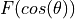:
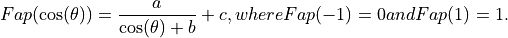
Given the th wo constraints 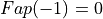 and 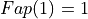, the approximation function is fully defined by parameter
 :
: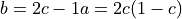
Depending on the convexity of 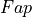,
can be from
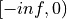 or 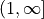.- Parameters
params (list or tuple) – Approximation function parameter list. This implementation requires only parameter c. Parameters a and b are calculated according to the above equations.
costheta (float or np.ndarray) – A vector of deflection angle cosines at which the function is evaluated.
- Returns
approx – Lut function approximation at the specified deflection angle cosines.
- Return type
np.ndarray
Examples
Approximation function for several different values of parameter a.
>>> from matplotlib import pyplot as pp >>> import numpy as np
>>> costheta = np.linspace(-1.0, 1.0, 1000) >>> C = [-0.01, -0.1, -1, -10] >>> for c in C: pp.plot(costheta, lut_function(costheta, [c]), label='a={}'.format(a)) >>> pp.xlabel('cos(theta)') >>> pp.ylabel('F') >>> pp.legend()